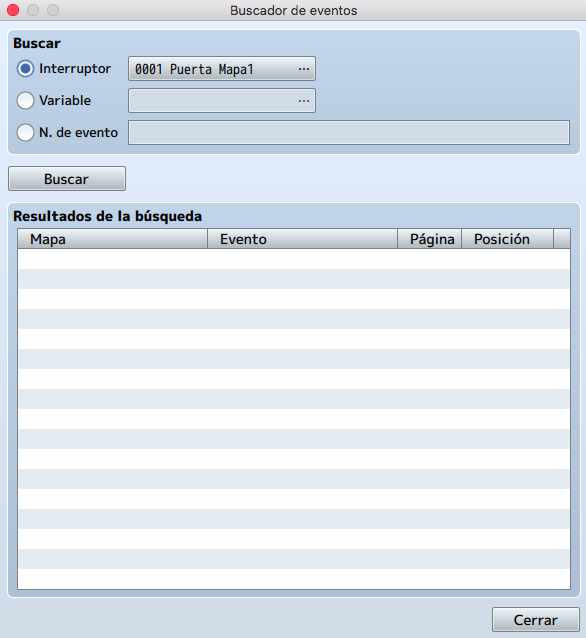
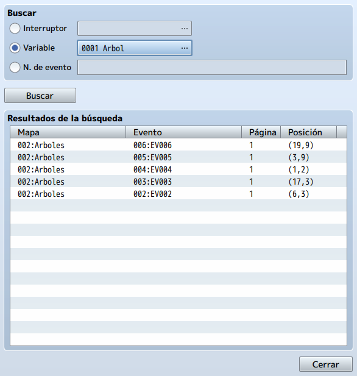
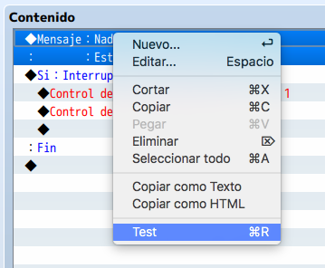

Event Searcher es una nueva utilidad en RMMV que se puede utilizar como su nombre lo indica: para buscar
eventos.
¿Con qué propósito?
Imagina que tienes veinte eventos y necesitas encontrar en cuántos de los eventos llamas a una determinada
variable o conmutador. Ahí es donde el Buscador de eventos puede ayudar.
Otra herramienta interesante es la prueba de eventos mientras los estamos definiendo.
En este tema aprenderemos a utilizar ambas herramientas.
Para acceder al Buscador de eventos, deberemos ir a la sección Ajustes del menú principal y hacer click
en Buscador de eventos.
Una vez allí, deberíamos ver la siguiente pantalla.

Para usarlo en nuestro proyecto como ejemplo, supongamos que queremos asegurarnos de tener cinco eventos que
suman al valor de la variable Arbol.
En el cuadro Buscar, haríamos click en la opción Variable.
Como primera variable de nuestro proyecto, Arbol aparecerá por defecto. De lo contrario, deberemos hacer
click en el botón que muestra 0001 Arbol y seleccionaremos la variable correcta.
Nos aseguramos de que la variable Arbol esté seleccionada y hacemos click en Buscar.
Deberíamos ver aparecer cinco resultados, como en la siguiente imagen.

Incluso nos da la ubicación precisa de cada resultado relevante. Impresionante, ¿no?
Esta herramienta tiene muchas posibilidades y es realmente buena para fines de verificación de errores.
Ahora, pasemos a la segunda característica nueva de RMMV, que es útil por razones similares, la prueba de
eventos en construcción.
Aunque no es una fórmula mágica que pueda resolver todos los problemas, Test es una nueva función en MV que
te permite comprobar que los comandos de tu evento funcionan según lo previsto sin tener que cargar una
prueba de juego.
Para probar las líneas de código del evento, tan solo tenamos que seleccionar el comando a probar y dar
click en Test del menú del botón derecho.

Nota: Test es útil para verificar secuencias de eventos que están encerradas por sí mismas (es decir, eventos que no dependen de otros eventos para completarse). No servirá de nada si intentamos usarlo para probar la validez del evento paralelo que creamos anteriormente, por ejemplo, ya que se basa en que el jugador ingrese a ciertos cuadrados para activar el evento transferir. Úselo para probar los eventos de transferencia en sí mismos, aunque eso es de uso limitado si desea saber si todo el evento funciona bien o no.
Continúa y experimente un poco con esta herramienta.
Nota: Se puede probar varias líneas de código durante una sola prueba. Para hacerlo, solo necesitamos hacer
click en la primera línea de código deseada, mantener presionada la tecla Mayúsculas y luego hacer click en
la última línea de código que desea probar.
Debería ver los comandos de eventos relevantes resaltados en azul. Luego puede hacer clic derecho en
cualquier lugar del área resaltada y seleccionar la opción Test.
A continuación realizaremos una serie de retos para afianzar los conocimientos en interruptores, variables y eventos.
Usando un evento con ejecución automática, crearemos un evento de dos páginas que reciba al jugador con un
cuadro de texto al llegar a la segunda área.
Al igual que con los eventos paralelos, te recomiendo que coloques este evento en un lugar al que el jugador
no pueda acceder.
Solo la primera página del evento debe ser de ejecucián automática. La segunda página debe estar en blanco,
con un disparador que no sea Proceso automático o Proceso paralelo. Activar un interruptor automático en la
página 1 y usarlo como un condicional en la página 2 probablemente funcionará mejor.
Ejemplo de Solución
Usando un evento con ejecución automática, usaremos los comandos de evento Fadeout y Fadein (Finalizar
transición e Iniciar Transición) para hacer que la pantalla se apague momentáneamente y luego revele el
cofre del tesoro, en lugar de que aparezca inmediatamente.
La forma más fácil de lograr esto es haciendo un poco de trampa. El cofre está configurado para aparecer
cuando Arbol sea igual a 5. Lo haremos de modo que el cofre aparezca cuando Arbol sea igual a 6. Luego, con
Finalizar transición, puede crear una ejecución automática cuando Arbol es igual a 5, agregaremos 1 al valor
de Arbol e Iniciar transición, en ese orden.
También se recomienda el uso de un interruptor automático para este evento. Una ejecución automática dejada
sin marcar podrá dejar colgado tu juego.
Ejemplo de Solución
Modificaremos los eventos de los cinco árboles para que también muestren un cuadro de texto que les diga a
los jugadores cuántos árboles ha mirado hasta ese momento.
Colocaremos el cursor sobre el cuadro de texto en el comando de evento Mostrar texto y lo dejaremos encima
hasta que aparezca la información de ayuda sobre las herramientas. Veremos una opción de texto que nos
permitirá imprimir el valor de una variable como texto.
Ejemplo de Solución